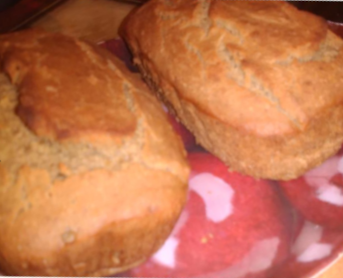

Ingredients
- 4 Cups of quinoa flour
- 3 Burro bananas
- 3 Tablespoons tahini butter
- 2 Tablespoons of toasted
- Sesame oil sparking mineral water
- 3 Cup of hemp or coconut milk
- (Hemp preferred)
- 1 Cup of agave
- 1 Cup of chopped dates or figs
- (Both preferred)
- 2 Tablespoons sea moss gel
- 2 Tablespoons of cloves
Directions
- Blend flour bananas figs, date, cloves, sae moss add milk to start blending in processor.
- Mineral water in slowly while blending berries stop at desired texture of butter or use all water.
- (Optional) Take 3 handfuls of rinsed berries, 1 handful of chopped nuts, walnuts, brazil or pine nuts (preferred) and add to the butter before.
- Use 12in baking pan for bread the muffin pans at your discretion
- Lightly oil or spray in grapeseed oil to baking dish.
- Bake on 350 275 degrees for 40 minutes to 1 hour at least (40 minutes) depending on type of oven used.
- Stick toothpick in to check if it comes out dry.
- After 30 minutes graze bread or muffins with alkaline oil of choice (Toasted seame preferred).
- But may use grapeseed oil otherwise.
- Tip: Maker a good snack or breakfast or to add in bread smoothies, just a slice or a muffin per smoothie. (Add chickpea or teff flours in).